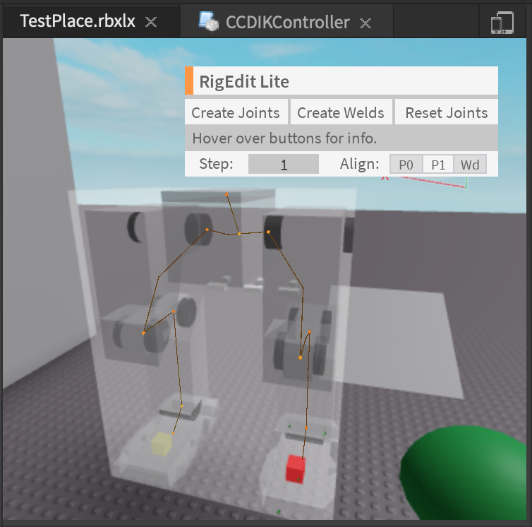
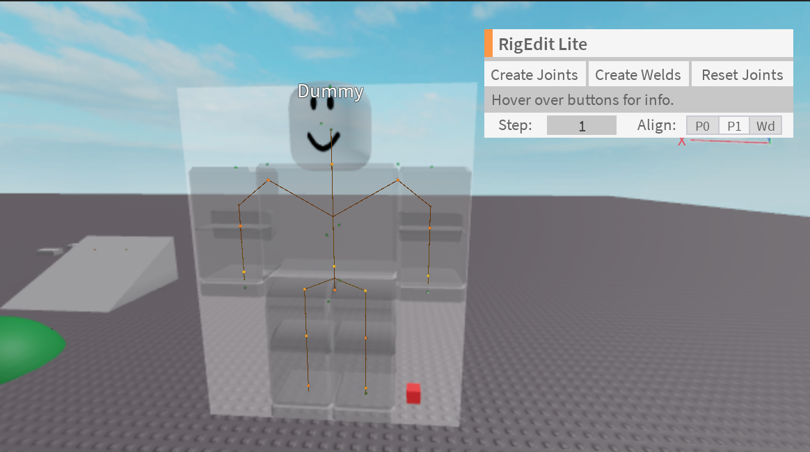
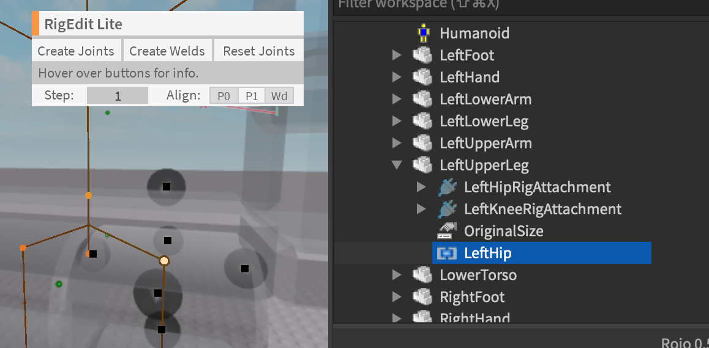
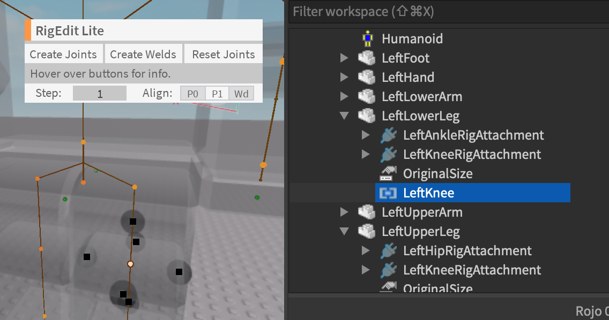
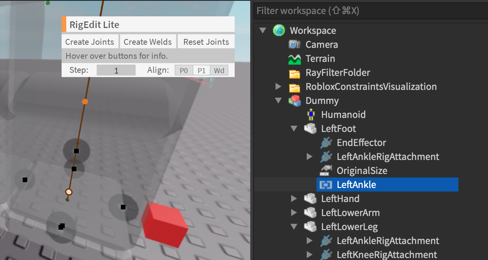
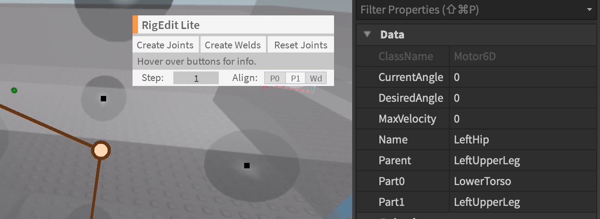
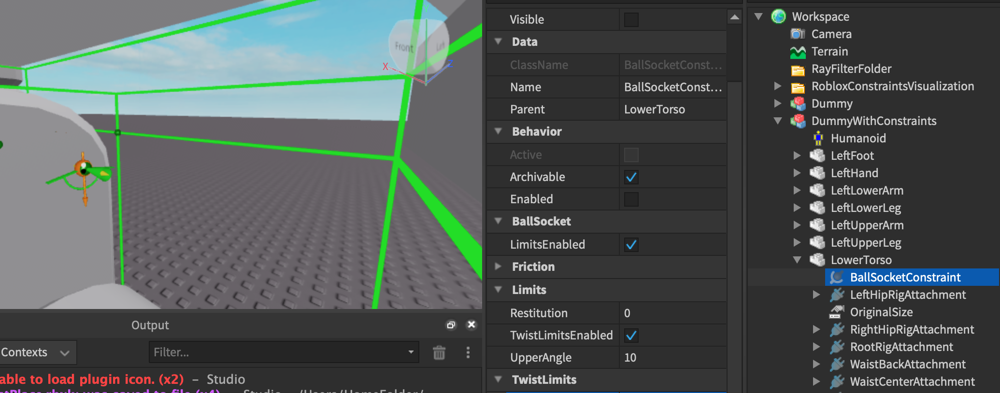
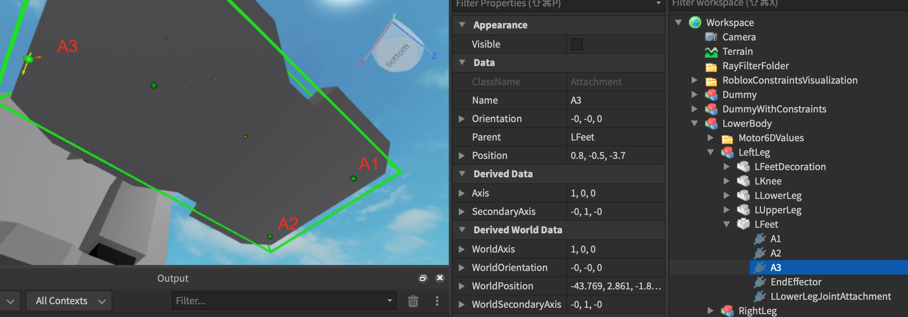

CCDIKController Setup Example
Prior to setting up the inverse kinematics for your rig we will first well...a rig.
Mech Rig Illustration through RigEdit lite:

In this setup tutorial I will be using the R15 dummy as it is a rig that everyone has access to.

The results of this tutorial can be seen in the test place through the disabled server script called R15Tutorial1 within the test place given.
Making the left leg move:
1. Identify and obtain the Motor6D Joints of the Rig
For the R15 Dummy in order to control the left leg this will consist of the following motors: LeftHip,LeftKnee,LeftAnkle.
Here is how I did it using using a for loop, and a dictionary to make it easier:
local dummy = workspace.Dummy
local dummyMotor6Ds = {}
local dummyDescendants = dummy:GetDescendants()
for _,descendant in pairs (dummyDescendants) do
if descendant:IsA("Motor6D") then
dummyMotor6Ds[descendant.Name] = descendant
end
end
local upperLeg = dummyMotor6Ds["LeftHip"]
local knee = dummyMotor6Ds["LeftKnee"]
local foot = dummyMotor6Ds["LeftAnkle"]
Here is how you can identify them using a plugin like RigEdit:



2. Create the CCDIK Object:
This step is done by creating a table of the Motor6D Joints starting from the base, and ending at the end of the joint, and inputting it into constructor of the CCDIK Object:
--Don't forget to require the module
local ReplicatedStorage = game:GetService("ReplicatedStorage")
local CCDIKController = require(ReplicatedStorage.Source.CCDIKController)
local leftLeg = {upperLeg,knee,foot} --Order matters here
local leftLegController = CCDIKController.new(leftLeg)
3. Let it rip
Now that the CCDIKController is setup, all that is left is to run the CCDIK functions to move the left.
For continuous movement you can use the CCDIK IterateOnce function in a heartbeat connection like so:
local RunService = game:GetService("RunService")
local leftTarget = workspace.newTarget--Part in workspace
RunService.Heartbeat:Connect(function()
local goal = leftTarget.Position
leftLegController:CCDIKIterateOnce(goal)
end)
Or you can use the IterateUntil if you intend to move it until it reaches the goal position.
local goal = leftTarget.Position
leftLegController:CCDIKIterateUntil(goal)
Full Code Sample
R15 Tutorial Dummy full code
--[[
Testing with R15 Dummy
]]
local RunService = game:GetService("RunService")
local ReplicatedStorage = game:GetService("ReplicatedStorage")
local CCDIKController = require(ReplicatedStorage.Source.CCDIKController)
local dummy = workspace.Dummy
local leftTarget = workspace.newTarget
local dummyMotor6Ds = {}
local dummyDescendants = dummy:GetDescendants()
for _,descendant in pairs (dummyDescendants) do
if descendant:IsA("Motor6D") then
dummyMotor6Ds[descendant.Name] = descendant
end
end
local upperLeg = dummyMotor6Ds["LeftHip"]
local knee = dummyMotor6Ds["LeftKnee"]
local foot = dummyMotor6Ds["LeftAnkle"]
local leftLeg = {upperLeg,knee,foot}
local leftLegController = CCDIKController.new(leftLeg)
RunService.Heartbeat:Connect(function()
local goal = leftTarget.Position
leftLegController:CCDIKIterateOnce(goal)
end)
Setting up the Constraints:
If you played around with the test place or tried the tutorial code previously you will find that the leg will move really strangely by itself.
To fix this we will add constraints which is simple to do with given the built in function given that the model is SetupCorrectly
Currently the module only supports Hinge and BallSocket Constraints however the setup is exactly the same as it uses the following function to setup the constraints from the Instances.
CCDIKController:GetConstraints()
1. Inserting the Roblox Physics Constraint Instance
If you are familiar with the Roblox Constraint system the process should be exactly the same to add a constraint between two parts please refer to the Roblox article page on the process. In this case it'll be between the Part0 and Part 1 of the Motor6D in which we want to add constraints to which is the LeftHip.

Luckily the R15 rig has the Motor6D joint represented as an attachment already setup named "LeftHipRigAttachment" in the LowerTorso and LeftUpperLeg. Consequently, all we have to do is to connect them with a Roblox physics constraint and place this constraint instance in the part0 of the model like so in the image below:

The attachment0 will be the attachment in the Part0 of the Motor6D, LowerTorso "LeftHipRigAttachment".
The attachment1 will be the attachment in the Part1 of the Motor6D, LeftUpperLeg "LeftHipRigAttachment".
If your model is a custom rig and doesn't have the RigAttachments setup just copy and paste the following code into the command bar:
Custom RigAttachment setup code
local rigModel = workspace.Dummy -- insert path to your own model
local function commandBarSetupRigAttachments(model)
local modelDescendants = model:GetDescendants()
for _,motor6D in pairs(modelDescendants) do
if motor6D:IsA("Motor6D") then
--In order to find the joint in world terms
local motor6DName = motor6D.Name
local AxisAttachment = Instance.new("Attachment")
AxisAttachment.CFrame = motor6D.C0
AxisAttachment.Name = motor6DName.."RigAttachment"
AxisAttachment.Parent = motor6D.Part0
local JointAttachment = Instance.new("Attachment")
JointAttachment.CFrame = motor6D.C1
JointAttachment.Name = motor6DName.."RigAttachment"
JointAttachment.Parent = motor6D.Part1
end
end
end
commandBarSetupRigAttachments(rigModel)
2. Setup the code and run
In order to let the code detect the constraint instances all we have to do is to simply run the following function after the CCDIKController is created!
local leftLeg = {upperLeg,knee,foot}
local leftLegController = CCDIKController.new(leftLeg)
leftLegController:GetConstraints()
And that's it!
3. Note the special cases
The issue with the function is that if the Part0 of the model has multiple constraint instances then the code will be confused which constraint the Motor6D uses. This will happen if a part is conencted with multiple Motor6D joints like the lower torso is connected with the left leg and the right leg.
To solve this after using :GetConstraints() function we correct it by using the following function to specify the constraint name for the Motor6D in the Part0 to connect to:
--API:
CCDIKController:GetConstraintsFromMotor(motor : Motor6D ,constraintName : string)
--example:
local leftLeg = {upperLeg,knee,foot}
local leftLegController = CCDIKController.new(leftLeg)
leftLegController:GetConstraints()--set up everything first
--Then do the correction:
--Finds the "LeftBallSocketConstraint" in the lowertorso part0 of the upperLeg Motor6D
leftLegController:GetConstraintsFromMotor(upperLeg,"LeftBallSocketConstraint")
Foot placement System
To setup the foot placement system we will need to add three attachments placed into the model like so:

Then specify the names of the attachments in a table in proper order from 1,2,3 and add RaycastParams to setup the foot placement system.
local leftLegController = CCDIKController.new(fullLeg)
leftLegController:GetConstraints()
--Setting up the foot
local footParams = RaycastParams.new()
footParams.FilterDescendantsInstances = {mech}
local attachmentNames = {"A1","A2","A3"} -- names the part1 of the foot Motor6D
leftLegController:SetupFoot(attachmentNames,footParams)
Moreover the make the foot behave lifelike be sure the add constraints in the same way as previously mentions using the given functions.